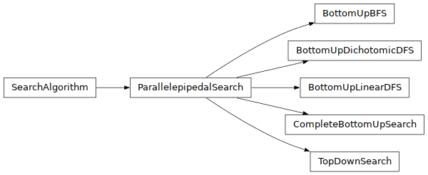
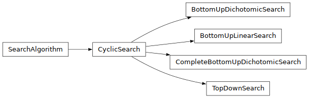

Algorithms¶
The supported algorithms.
Parallepipedal Algorithms¶

- class algorithms.parallelepipedal.ParallelepipedalSearch(isSAT: NNVerification, max_it: int = 1000, timeout: int = 60, verbose: bool = False)¶
Description: The top class of search algorithms for parallelepipedal guarantees. Each of the inherited classes needs to define a search method. This search method should take as input a parallelepipedal guarantee.
- __init__(isSAT: NNVerification, max_it: int = 1000, timeout: int = 60, verbose: bool = False)¶
- class algorithms.parallelepipedal.TopDownSearch(isSAT, max_it=1000, timeout=60, verbose=False)¶
Description: * A search algorithm implementing a top down search in the guarantee space. * The guarantee passed to the search() method needs to have defined a constrain() method that takes as input a counterexample and returns a refined guarantee that excludes the given counterexample.
- __init__(isSAT, max_it=1000, timeout=60, verbose=False)¶
- class algorithms.parallelepipedal.CompleteBottomUpSearch(isSAT, max_it=1000, timeout=60, verbose=False)¶
Description: * A search algorithm implementing a bottom up search in the guarantee space. * computing a complete approximation * The guarantee passed to the search() method needs to have defined a concatenate() method that takes as input a counterexample and returns a refined guarantee that excludes the given counterexample.
- __init__(isSAT, max_it=1000, timeout=60, verbose=False)¶
- class algorithms.parallelepipedal.BottomUpLinearDFS(isSAT, max_it=100, timeout=60, verbose=False)¶
Description: * A search algorithm implementing a bottom up linear search in the space of guarantees. * Expanding one feature at the time. * The guarantee passed to the search() method needs to have defined the following methods: * expand_ub(i, j) * expand_lb(i, j) * revert_expand_ub(i, j) * revert_expand_lb(i, j)
See also: Used in the paper: “Delivering Inflated Explanations” - Y. Izza et al. (2024)
- __init__(isSAT, max_it=100, timeout=60, verbose=False)¶
- class algorithms.parallelepipedal.BottomUpDichotomicDFS(isSAT, max_it=100, timeout=60, verbose=False)¶
A search algorithm implementing a bottom up dichotomic search in
the space of guarantees. * Expanding one feature at the time. * The guarantee passed to the search() method needs to have defined the following operations:
expand_dichotomic_ub(i, j)
expand_dichotomic_lb(i, j)
up_high_pivot(i, j)
down_high_pivot(i, j)
up_low_pivot(i, j)
down_low_pivot(i, j)
- __init__(isSAT, max_it=100, timeout=60, verbose=False)¶
- class algorithms.parallelepipedal.BottomUpBFS(isSAT, max_it=100, timeout=60, verbose=False)¶
#### Description: * A search algorithm implementing a bottom up search in the space of guarantees. * Expanding one feature at the time. * The guarantee passed to the search() method needs to have defined the following methods: * expand_ub(i, j) * expand_lb(i, j) * revert_expand_ub(i, j) * revert_expand_lb(i, j)
- __init__(isSAT, max_it=100, timeout=60, verbose=False)¶
Cyclic Algorithms¶

- class algorithms.cyclic.CyclicSearch(isSAT: NNVerification, max_it: int = 1000, timeout: int = 60, verbose: bool = False)¶
#### Description: The top class of search algorithms for cyclic guarantees. Each of the inherited classes needs to define a search method. This search method should take as input a cyclic guarantee.
- __init__(isSAT: NNVerification, max_it: int = 1000, timeout: int = 60, verbose: bool = False) None¶
- class algorithms.cyclic.TopDownSearch(isSAT, max_it=1000, timeout=60, verbose=False)¶
#### Description: * A search algorithm implementing a top down search in the guarantee space. * The guarantee passed to the search() method needs to have defined a constrain() method that takes as input a counterexample and returns a refined guarantee that excludes the given counterexample.
- __init__(isSAT, max_it=1000, timeout=60, verbose=False)¶
- class algorithms.cyclic.BottomUpLinearSearch(isSAT, max_it=1000, timeout=60, verbose=False)¶
#### Description: * A search algorithm implementing a bottom up search in the space of guarantees. * The guarantee passed to the search() method needs to have defined an expand() method. * Primarly used for cyclic guarantees
- __init__(isSAT, max_it=1000, timeout=60, verbose=False)¶
- class algorithms.cyclic.BottomUpDichotomicSearch(isSAT, max_it=1000, timeout=60, verbose=False)¶
#### Desrciption: * A search algorithm implementing a bottom up dichotomic search in the space of guarantees. * The guarantee passed to the search() method needs to have defined an expand_dichotomic() method. * Primarly used for cyclic guarantees
- __init__(isSAT, max_it=1000, timeout=60, verbose=False)¶
- class algorithms.cyclic.CompleteBottomUpDichotomicSearch(isSAT, max_it=1000, timeout=60, verbose=False)¶
#### Desrciption: * A search algorithm implementing a bottom up dichotomic search in the space of guarantees. * The guarantee passed to the search() method needs to have defined an expand_dichotomic() method. * Primarly used for cyclic guarantees
- __init__(isSAT, max_it=1000, timeout=60, verbose=False)¶